iWarranty & Copyright
Manual revised March 2016. PeakAbout software version 3.9.0. Printed in U.S.A.
Warranty
Warranty is 1 Year standard, unless otherwise specified. Materials and workmanship, return to manufacturer included. If repairs are required during the warranty period, contact the factory for component replacement or shipping instructions. Include the serial number of the instrument. This warranty is void if the unit is repaired or altered by others than those authorized by Berkeley Nucleonics Corporation.
1Introduction
1.1 Functional Description
The SAMpack 120 Spectroscopic Radiation Detection Backpack is engineered to meet ANSI 42.34 performance criteria for handheld instruments for the detection and identification of radionuclides. Its lightweight, portable design makes it ideal for many types of radiological surveys, including the most demanding applications, such as evaluation of radiation hazards by Homeland Security and first responders.
The SAMpack 120 replaces traditional instruments with a patented solution that seamlessly integrates smartphone or PDA (personal digital assistant) technology with nuclear radiation detectors. The standard smartphone included with the SAMpack 120 is the Motorola Moto G.
The SAMpack 120 is designed to include, at a minimum, a 3 x 3 inch sodium iodide (NaI(Tl)) scintillation detector in order to provide the highest sensitivity, general purpose isotope identification. High resolution detector options are available. The system can also include a GM tube and/or a neutron detector. In the standard configuration, the detector is carried inside a small, unmarked backpack (Figure 1.1). Shoulder pack, stationary, and custom configurations are available as well.
The detector forwards data to the smartphone via Bluetooth. The smartphone provides an easy-to-read display, informing the user of the identity and levels of radionuclides present (and helping to ensure personal safety). The SAMpack 120 can also use the smartphone’s locator services to continuously transmit GPS locations for mapping of radiation data. Upon completion of a survey, data may be downloaded from the smartphone to a PC.
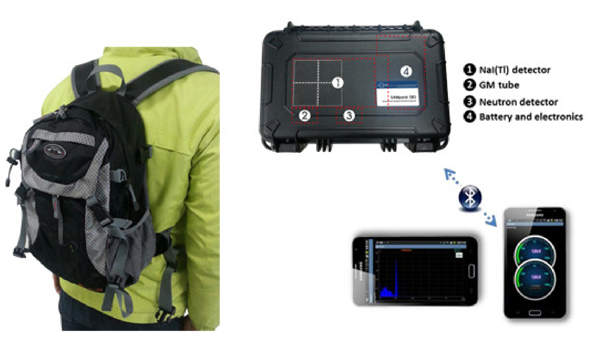
1.2 Important Safety Information
The SAMpack 120 has been meticulously engineered to provide safe, dependable, high performance for years. As with any kind of electrical equipment, following instructions and taking basic precautions will prevent harm to the operator and to the equipment.
Prior to using this equipment you should:
- Read this manual. Read and understand this manual thoroughly, especially the chapter on safety (Chapter 2).
- Read the labels. Read and understand thoroughly all warning labels on the equipment.
- Keep the documents. Store all documents provided with the equipment in a safe place for future reference.
2Safety
2.1 Safety Warnings and Instructions
Following the warnings and instructions on this page is crucial to the safe and optimal operation of the SAMpack 120.
2.2 Classification
- EMC: Complies with EN 61326-1:2006, EN 301 489-1 V1.9.2, and EN 301 489-17 V2.2.1.
- FCC Class: Class B Equipment (FCC CFR 47 part 15 subpart B, Section 15.101).
- Degree of protection against electric shock: Type BF Applied Part.
- Degree of protection against the ingress of water: IP65.
- Anesthetic environment: Equipment not suitable for use in the presence of a flammable anesthetic mixture with air or with oxygen or nitrous oxide.
2.3 Labels
The label showing the system power requirements and serial number (BSN, lower right corner) is located on the side of the unit (Figure 2.1).
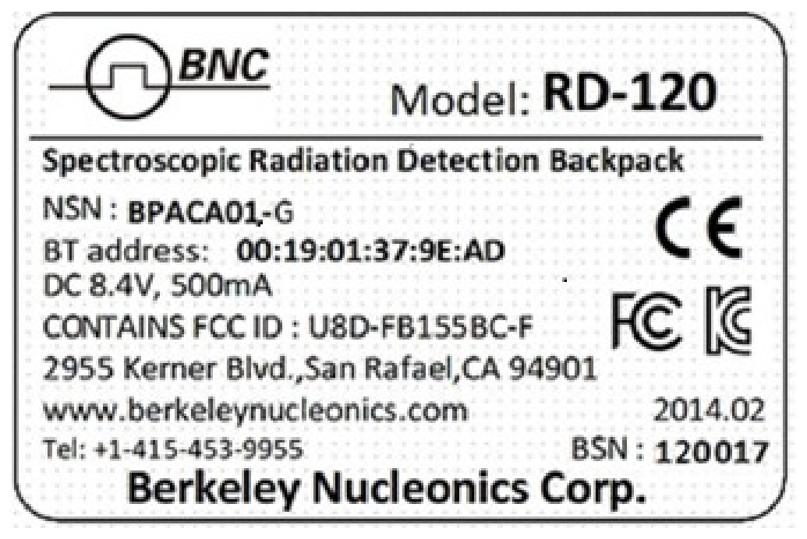
3System Description
3.1 System Components
The SAMpack 120 physically consists of a detector unit, a smartphone (Motorola Moto G or equivalent), AC and vehicle power adapter/chargers for the detector unit (one AC to 8.4V DC, and one 12V vehicle adapter/charger), a USB to micro USB cable, an unmarked backpack, and a water- and shock-resistant carrying case (Figure 3.1). The two software programs used with the SAMpack 120 are described in section 3.2.
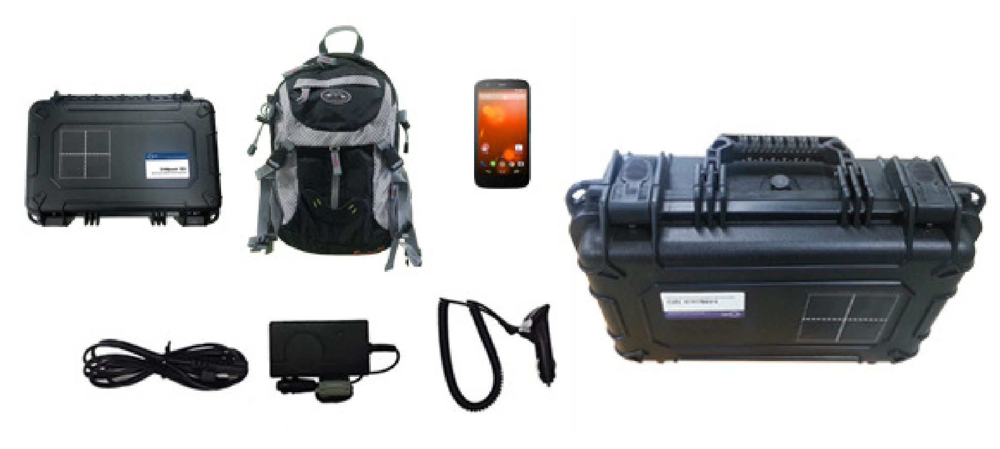
3.2 SAMpack 120 Software
The SAMpack 120 includes two dedicated software programs for conducting surveys and analyzing results.
SAM III PeakAbout for the smartphone:
- PeakAbout is used for configuring and calibrating the system, and for real-time measurement and analysis of data acquired by the detector unit. It is based on the Android operating system and works with the Motorola Moto G as well as many other smartphones that run Android.
- Smartphones shipped from Berkeley Nucleonics Corporation already have the current version of PeakAbout installed (in addition to the manufacturer’s software). Detailed instructions for operating PeakAbout are in Chapter 4.
SAM III PeakID for the PC:
- PeakID supports management of Event Log files, data analysis including integration of data from multiple units, and data backup. It is compatible with PCs that run Windows 7 or higher.
- Detailed instructions for installing and operating PeakID are in Chapter 5.
3.3 Power and Battery Charger
The power switch and DC connector are located on the side of the detector unit (Figure 3.2). The LED on the power switch glows red when the power is on.
The SAMpack 120 is equipped with a lithium-ion battery including a built-in power protection circuit module (PCM) to prevent the battery from overcharging or over-discharging. It is best to regularly charge the battery until the LED on the charger glows green, indicating full charge has been reached. When necessary, you may disconnect the charger before reaching full charge.
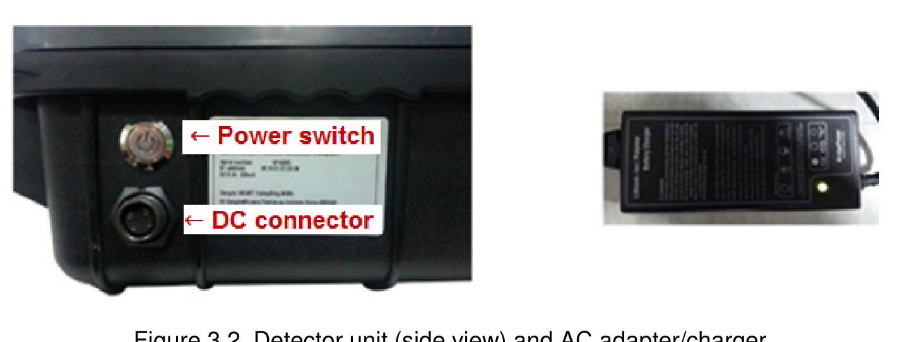
3.4 Before Operating the SAMpack 120
- Charge the SAMpack 120 battery.
- For faster results, we recommend turning off the power switch (Figure 3.2) before charging.
- Plug in the AC adapter/charger to the detector unit’s DC connector (Figure 3.2) and to a power outlet. The spring-loaded connector locks the cable securely to the detector unit.
- It can take up to six hours to fully charge the battery. When full charge has been reached, the LED on the AC adapter/charger glows green. (There is also a battery indicator on the PeakAbout home screen, but it will not be available if the detector unit’s power is turned off.)
- After charging, disengage the cable from the detector unit by firmly holding the male connector and gently twisting a quarter-turn, then pulling straight back.
- Charge the smartphone battery. Refer to the smartphone manual for instructions.
- Refer to Chapter 4 for detailed procedures on setup, configuration, background measurement, and calibration.
4PeakAbout Application
4.1 Overview
PeakAbout enables the smartphone to communicate with the detector unit through the Bluetooth network protocol. The smartphone’s main function is to display dose rate and count rate data for gamma-ray energy in real time. PeakAbout provides a convenient graphical display and access to analytical tools. It also manages the configuration and calibration of the detector unit (or units) with which it is paired.
PeakAbout allows Bluetooth networking exclusively between a smartphone and one or more detector units. This avoids data collision issues with any other Bluetooth devices in the area.
4.2 Navigating the GUI
4.2.1 Home Screen
In addition to displaying dose rate and count rate data on a logarithmic scale gauge, the PeakAbout home screen gives information on the system’s operating status (Figure 4.1).
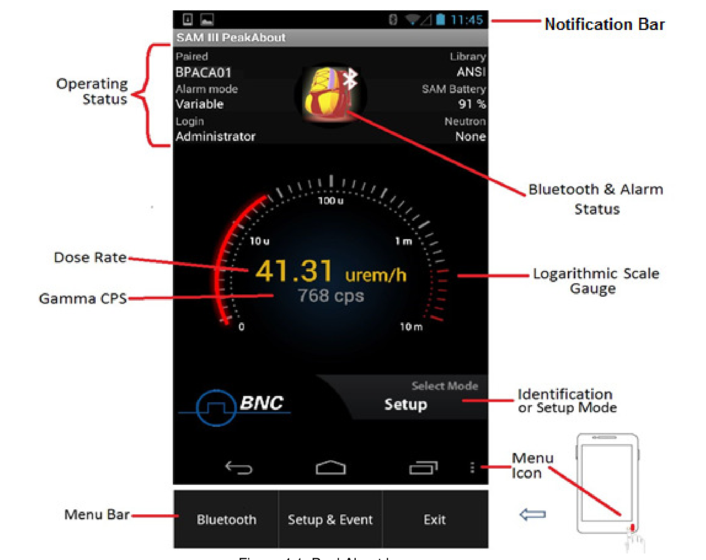
Screens and pop-up menus typically accessed from the home screen are shown in Figure 4.2 and listed in the table that follows. Rotating the screen 90° switches between two tasks, depending on which mode is active. Touching the menu button at the bottom right corner of the home screen toggles the menu bar on and off.
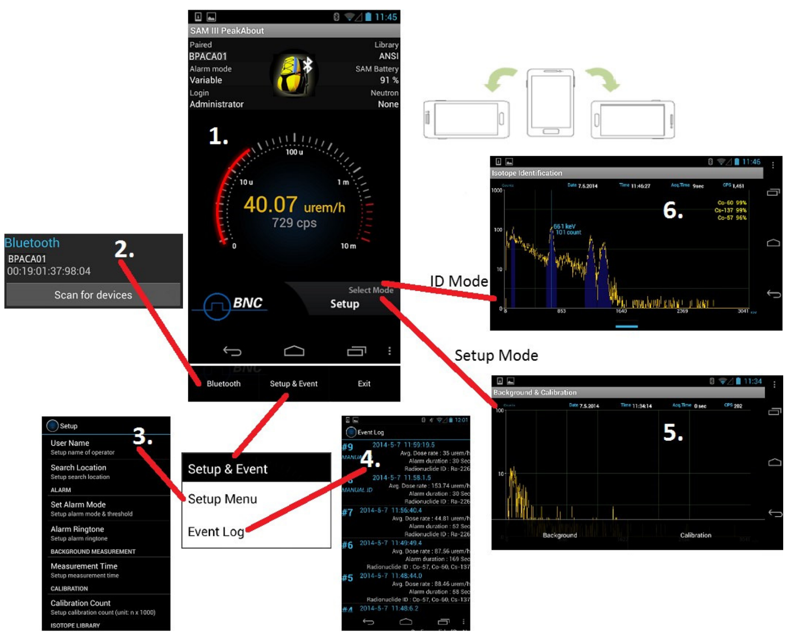
| # | Element | Description |
|---|---|---|
| 1 | Home screen | Displays dose rate, count rate, system status, menu button, and battery indicator |
| 2 | Bluetooth pop-up menu | Displays paired devices and manages Bluetooth functions |
| 3 | Setup menu | Allows operator to set up alarm threshold and ringtone, background measurement time, and more |
| 4 | Event Log | Displays Event List and summary |
| 5 | Background & Calibration menu | Provides access to background measurement and calibration functions |
| 6 | Isotope Identification | Displays spectrum and identified nuclides |
4.2.2 Background Measurement and Manual Calibration
Background and Calibration modes and their associated functions are initiated by rotating the smartphone 90° while in Setup mode (Figure 4.3).
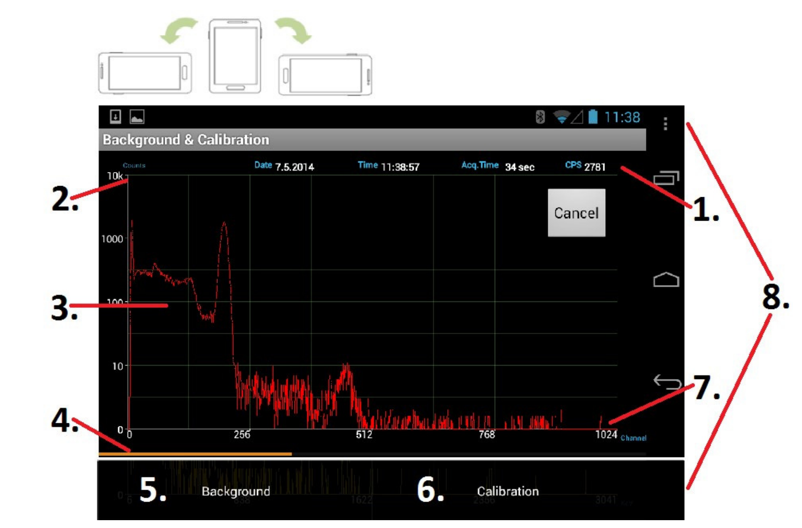
| # | Element | Description |
|---|---|---|
| 1 | General information | Date, time, acquisition time, and counts per second |
| 2 | Counts | Y-axis displays counts on a self-adjusting, logarithmic scale |
| 3 | Spectrum | Displays spectrum in real time |
| 4 | Progress bar | Indicates progress toward completion of background measurement or manual calibration |
| 5 | Background button | Selects background measurement function |
| 6 | Calibration button | Selects manual calibration function |
| 7 | Channel/Energy | X-axis displays channel or energy on a linear scale |
| 8 | Menu button and pop-up menu | Touching menu button toggles Background & Calibration menu on/off |
Measuring background radiation and determining a reference are important for accurate nuclide identification. Manual calibration with a Cs-137 source is also important for ensuring optimal results. See sections 4.3.5 and 4.3.6 below for instructions.
4.2.3 Isotope Identification
When the system is in Identification mode, the Isotope Identification screens (Figure 4.4) can be initiated by rotating the screen 90°. Spectral data acquired in real time are displayed. If the count rate is greater than the background level, the system automatically alarms and displays the identified nuclide(s) with corresponding confidence level(s).
The short blue bar at the bottom center of the screen (Figure 4.4) is a swipe bar. Touching it and swiping upward opens the classification screen, displaying the dose rate of the identified nuclide(s) in a bar graph. Swiping the swipe bar (now at the top of the screen) downward returns you to the spectrum screen.
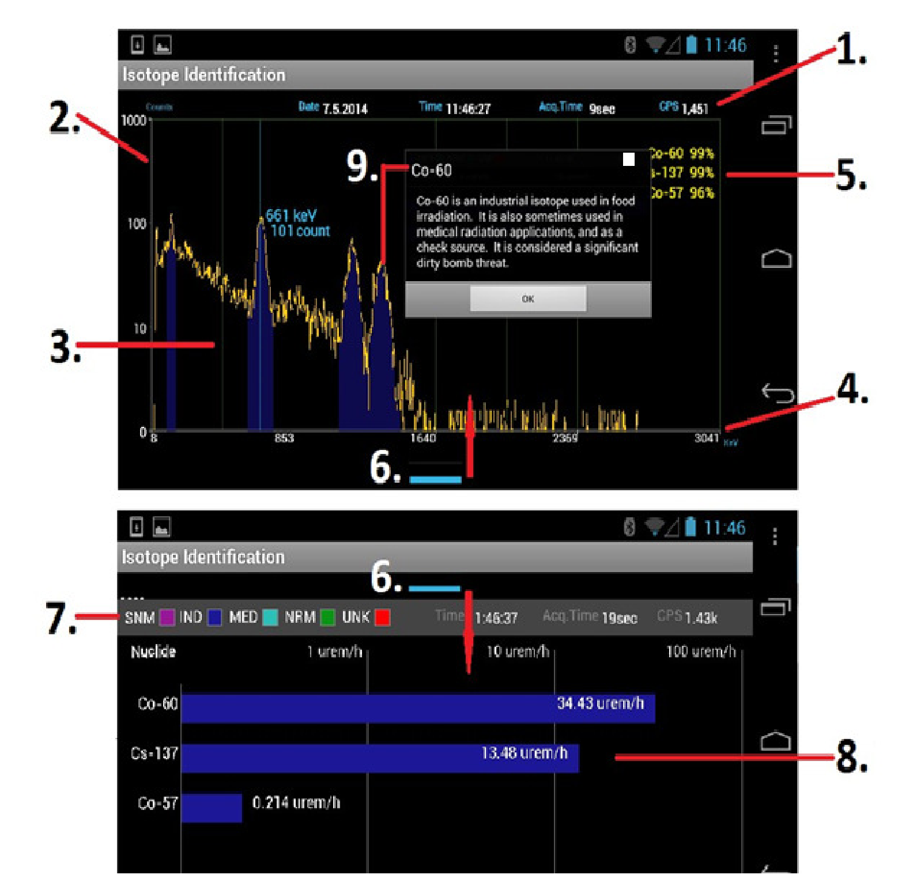
| # | Element | Description |
|---|---|---|
| 1 | General information | Date, time, acquisition time, and counts per second |
| 2 | Counts | Y-axis displays counts on a self-adjusting, logarithmic scale |
| 3 | Spectrum | Displays spectrum in real time |
| 4 | Channel/Energy | X-axis displays channel or energy on a linear scale |
| 5 | Isotope Identification | Displays nuclide identity and confidence level |
| 6 | Swipe bar | Swipe up to show the classification screen, swipe down to return to the spectrum screen |
| 7 | Classification | Classifies identified isotopes as: SNM – Special Nuclear Material (magenta); IND – Industrial Isotopes (blue); MED – Medical Isotopes (cyan); NRM – Naturally Occurring Radioactive Material (green); UNK – Unknown Material (red) |
| 8 | Dose rate | Displays dose rate of classified isotope on color-coded, logarithmic bar graph |
| 9 | Help | Displays isotope name and description |
If multiple isotopes are identified, the classification screen will place the most significant isotope (with the highest contributing dose rate) as the top-most bar, and the remaining isotopes in descending order by dose rate. Each bar will be named and displayed with the corresponding classification color.
4.2.4 Spectrum Manipulation
You can manipulate the spectral display by touching areas of the screen (Figure 4.5). The Y-axis maximum value is automatically adjusted based on the channel with the maximum counts.
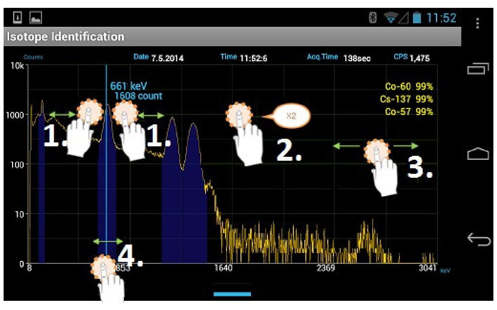
| # | Action | Effect |
|---|---|---|
| 1 | Touch with two fingers and spread or squeeze | Widen or narrow a region of interest |
| 2 | Double-tap | Double-tap to zoom in, double-tap again to zoom out |
| 3 | Hold and move left/right | Shift spectrum along the x-axis (when zoomed in) |
| 4 | Touch x-axis, hold, and move left or right | Display energy and count value on a moveable line at the touched position |
4.3 Basic Operating Instructions
4.3.1 Prepare Equipment for Operation
- Turn on the SAMpack 120 (Figure 3.2) and the smartphone.
- Open PeakAbout by touching the PeakAbout icon on the Applications menu on the smartphone (Figure 4.6, left).
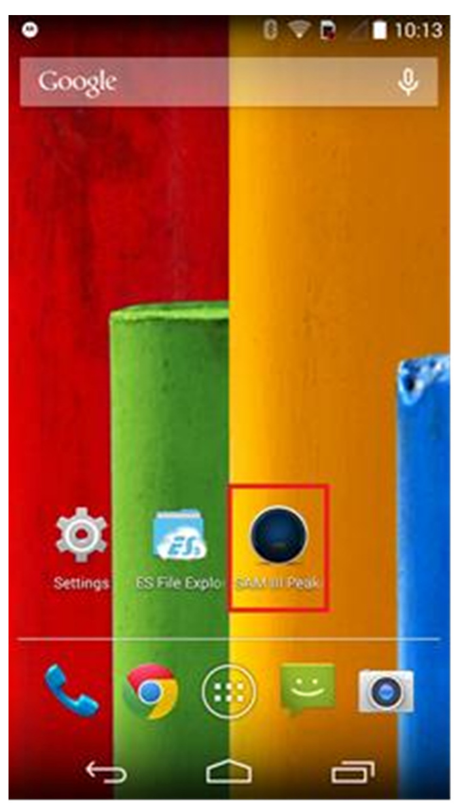
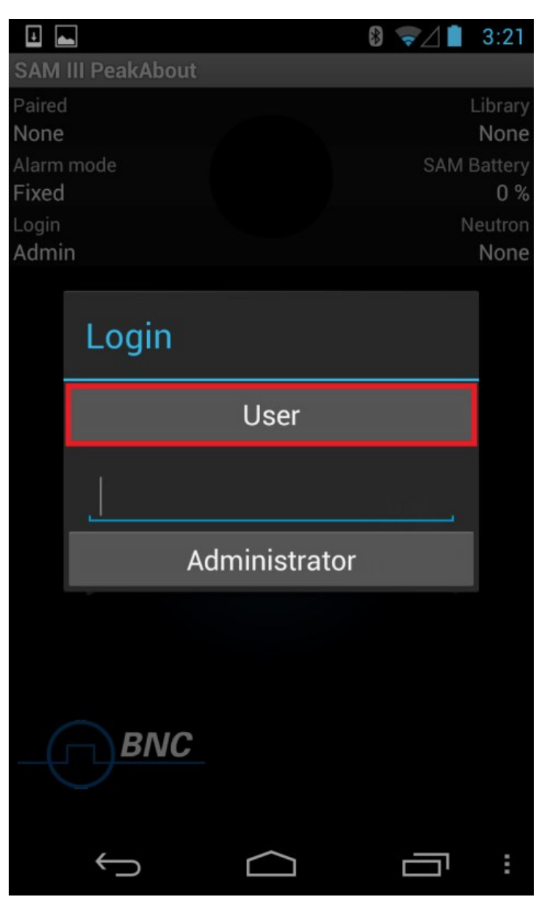
Figure 4.6. PeakAbout icon (left) and login screen (right)
4.3.2 Log In and Establish Bluetooth Connection
- Log in as User (no password needed) or as Administrator (password protected) (Figure 4.6, right). You must log in as Administrator to use the Setup functions. The factory default Administrator password is 1234. To change the password, open the Setup menu and select Device Information / Password (Figure 4.9).
- If PeakAbout does not automatically pair with the detector unit, you must establish a connection via Bluetooth.
- Touch the menu button in the bottom right corner of the screen (Figure 4.7).
- Select Bluetooth from the menu. The Bluetooth menu can only be opened when PeakAbout is in Setup mode. If the Bluetooth menu is pressed when PeakAbout is in Identification mode, the message “Now running” will appear below the logarithmic scale gauge.
- The Paired Devices list will appear (Figure 4.7). Select the desired device from the list. The Bluetooth name of the detector unit always starts with BP. The 12-digit Bluetooth code appears on the label attached to the detector unit (Figure 2.1). Previously connected SAMpack 120 units are automatically listed on the Paired Devices list. If a unit is not listed, touch Scan for devices to initiate a search for all units within range. PeakAbout will only recognize SAMpack 120 units, not other Bluetooth devices.
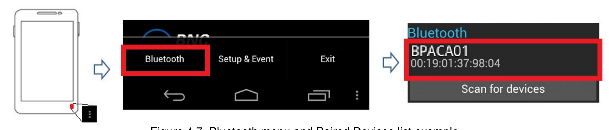
4.3.3 Enter User Name and Location of Search
- Touch the menu button in the bottom right corner of the screen (Figure 4.8).
- Select Setup & Event from the menu.
- Select Setup Menu.
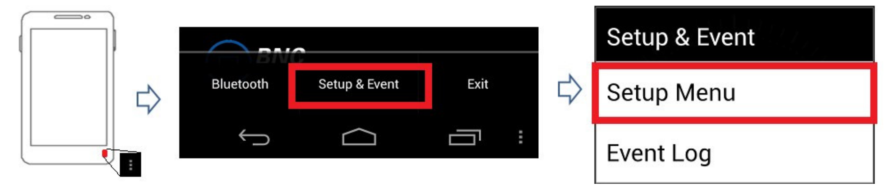
- Select User Name and enter the appropriate information (Figure 4.9). Enter the Search Location likewise.
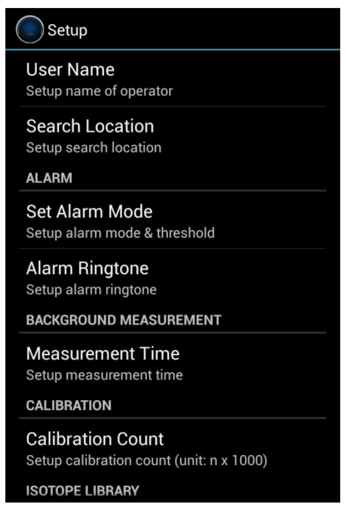
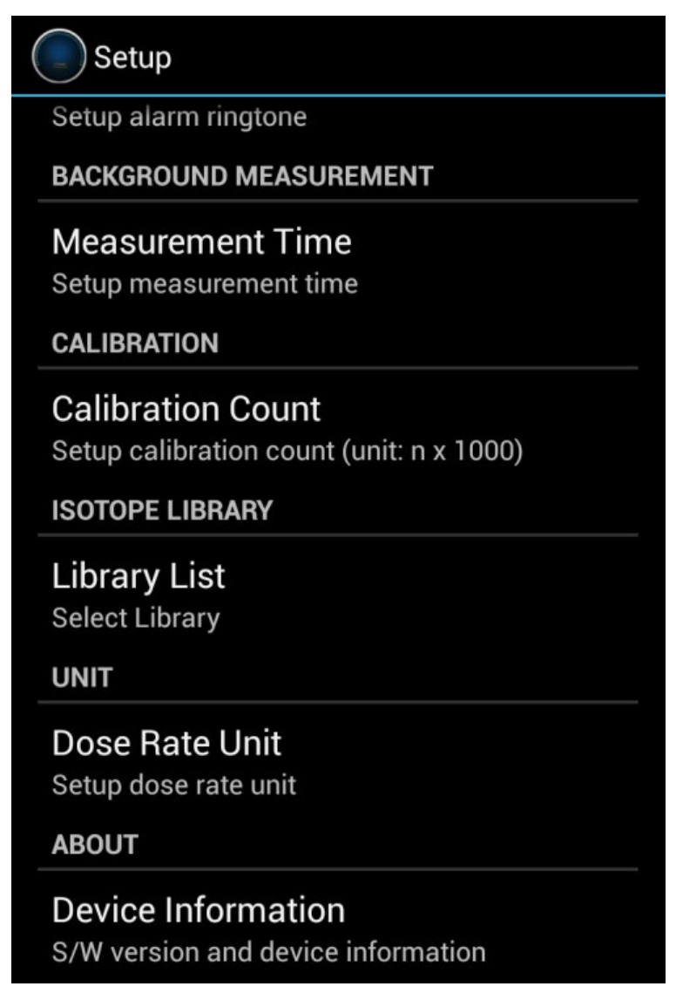
Figure 4.9. Setup menu screens
4.3.4 Select Alarm Threshold and Ringtone
PeakAbout provides two options for alarm triggering: Fixed and Variable.
Fixed Alarm Mode is a basic method that assumes the background environment exhibits a very small amount of fluctuation. The alarm is triggered when the count rate exceeds the operator-determined threshold value. This method can cause false alarms if there is substantial background fluctuation due to Naturally Occurring Radioactive Material (NORM), as is often the case when the system is moving across a large area while actively monitoring.
Variable Alarm Mode is a more advanced method that continuously samples the previous 20 seconds’ worth of background fluctuation and calculates the standard deviation (σ, or sigma) of the fluctuation. Using this method prevents alarms due to changing background (and eliminates the need to perform new background measurements). Instead, alarms are triggered when real gamma peaks exceed the standard deviation of the threshold value. We recommend using Variable Alarm Mode when moving across a large area that may be subject to changes in background.
- From the Setup menu, select Set Alarm Mode (Figure 4.10). If selecting Fixed Alarm Mode, go to step 2. If selecting Variable Alarm Mode, skip to step 3. You must log in as Administrator to change the alarm threshold values.
- For Fixed Alarm Mode, the default threshold value is 1000 counts per second (CPS), which is optimal for most applications. Either accept the default or enter a threshold count rate value in CPS, then touch OK. A typical background environment produces around 200 CPS for the SAMpack 120’s standard 3 x 3 inch NaI detector (lower if a high resolution detector option was chosen). A threshold value lower than 1000 is usually unnecessary, and is more likely to generate false alarms. In situations where the background environment is known to be above normal, it may be necessary to select a higher value in order to minimize false alarms.
- The default threshold value for Variable Alarm Mode is 4 (sigma), and the typical range is 1 to 5. Either accept the default or enter a threshold deviation value in sigma, then touch OK. Selecting a lower value creates slack in the threshold criteria and increases the likelihood of false alarms. Selecting a higher value can narrow the threshold criteria and cause significant gamma activity to be overlooked if it passes very quickly.
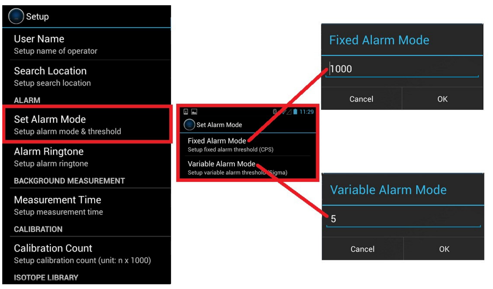
There are six alarm ringtones to choose from.
- From the Setup menu, select Alarm Ringtone (Figure 4.11).
- Highlight a ringtone to hear it play. Select the desired ringtone.
- Save the selection by touching OK.
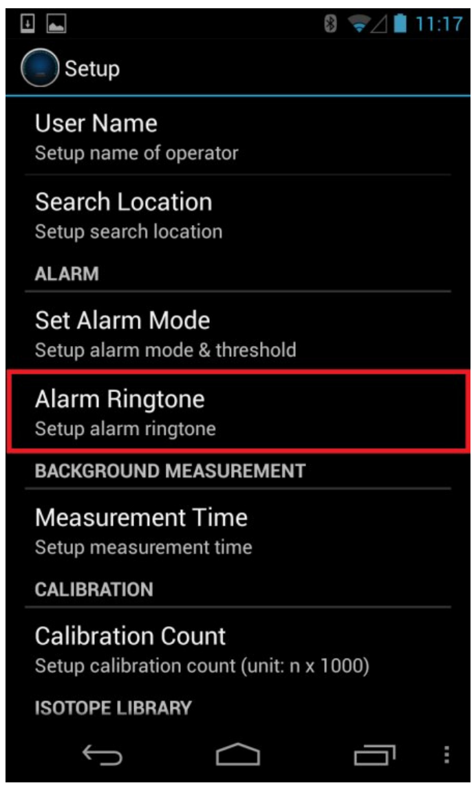
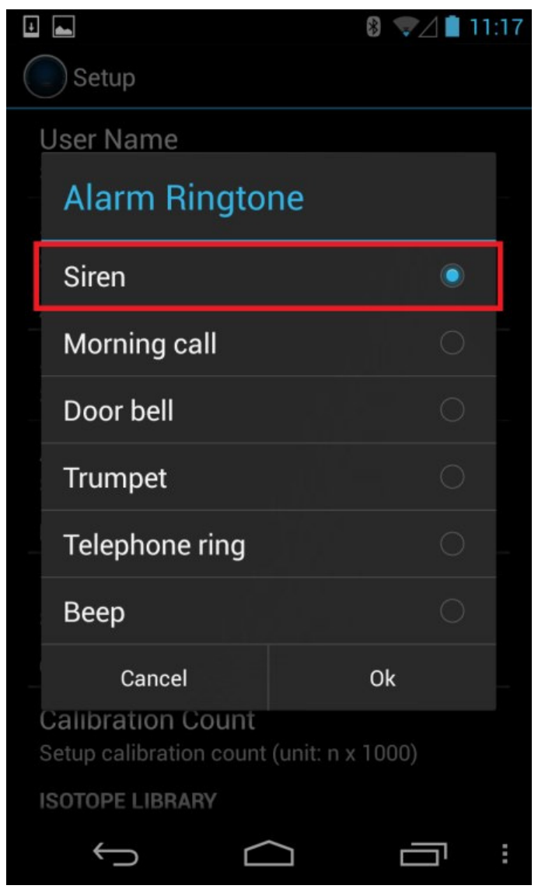
Figure 4.11. Select Alarm Ringtone
You can adjust the ringtone volume via the smartphone’s Media Volume controls. The Beep ringtone differs from the others in that the rate of the beeping increases when an increase in the count rate is detected. This can be a useful audio cue during a search operation. For the user’s protection, PeakAbout also features a separate alarm which is triggered when the safety threshold is exceeded. See section 4.4.1, Health Safety Alarm.
4.3.5 Perform Background Measurement
Reliable background information is critical to good nuclide identification and alarm performance. PeakAbout uses an advanced NORM rejection algorithm to minimize false alarms due to fluctuations of Naturally Occurring Radioactive Material in the background.
- Make sure there are no unshielded radiation sources near the SAMpack 120.
- With PeakAbout in Setup mode, rotate the smartphone 90° to initiate Background & Calibration mode.
- Touch the menu button (now in the top right corner of the screen) and select Background. The background spectrum (displayed in red) is automatically updated during the measurement (Figure 4.12).
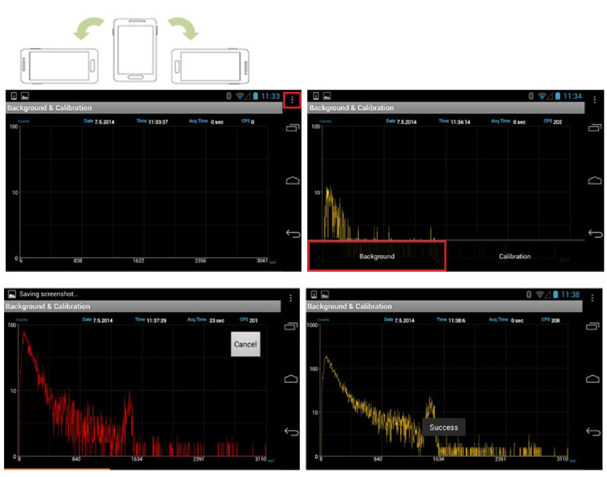
Measurement time is defined in the Setup menu. To change this setting, select Device Information / Measurement Time.
4.3.6 Perform Manual Calibration
While we recommend performing manual calibration to ensure optimal results, most normal operations can be conducted without this step. If a Cs-137 source is not available, skip to section 4.3.7.
- With PeakAbout in Setup mode, rotate the screen 90° to initiate Background & Calibration mode (Figure 4.13).
- Place a Cs-137 source next to the detector unit. Ideally the Cs-137 source is active enough to elicit approximately 2500 counts per second (CPS). If the count rate is too high, increase the distance between the source and the detector (Figure 4.14). Decrease the distance if the count rate is low.
- Touch the menu button and select Calibration. The calibration spectrum is displayed in red during the measurement. When the selected number of counts have been acquired, the screen will display “Success” (Figure 4.13). The x-axis units change from channel number to energy (in keV). Remove the Cs-137 source.
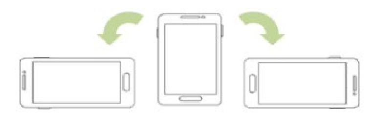
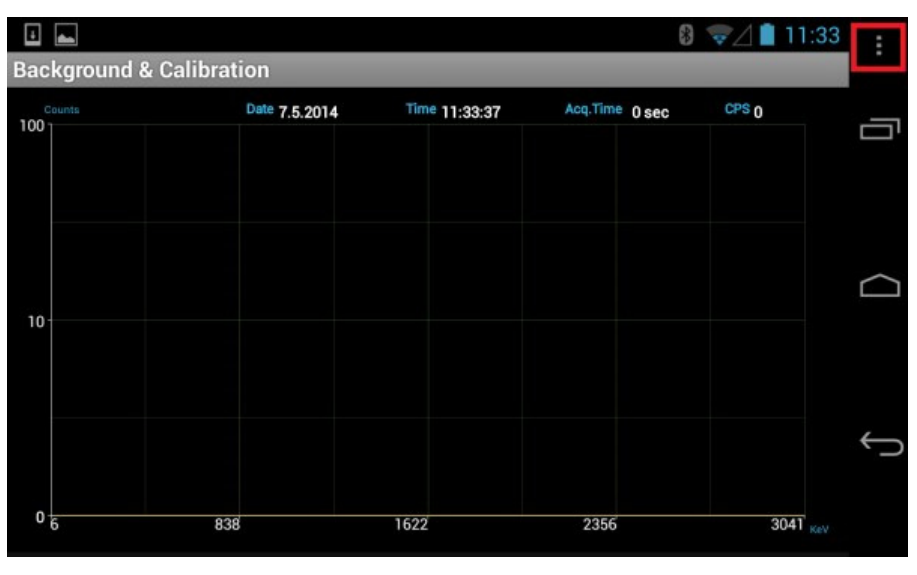
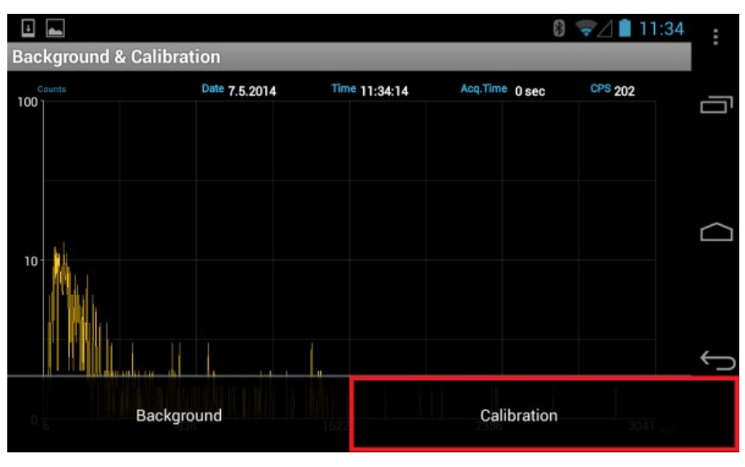
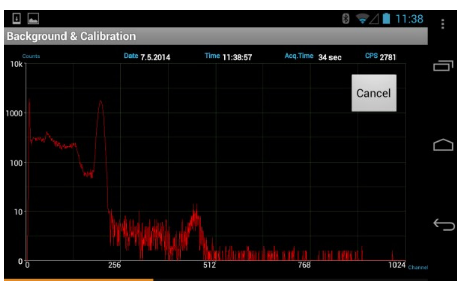
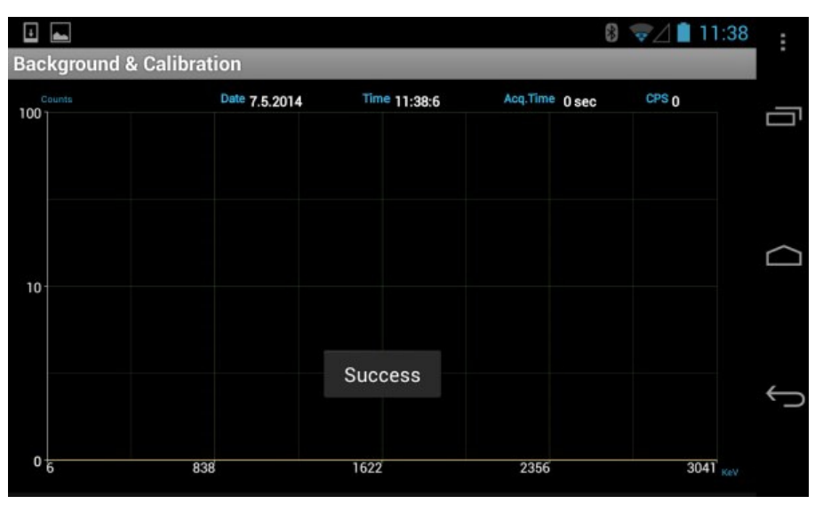
Figure 4.13. Manual calibration example
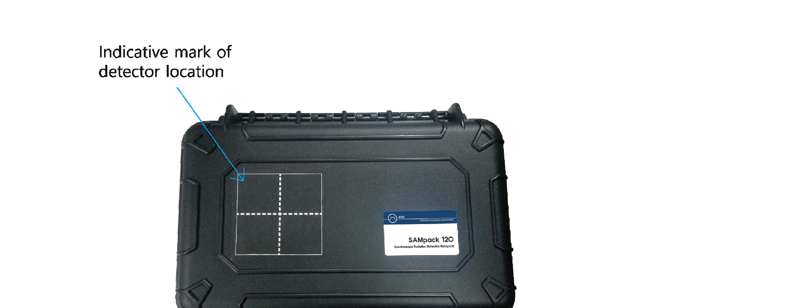
4.3.7 Monitor Radiation
If Variable Alarm mode is in effect, allow about 20 seconds before surveying for the unit to collect background data and set the alarm threshold.
- On the home screen, touch the Select Mode area to the lower right of the gauge to enter Identification mode (Figure 4.15).
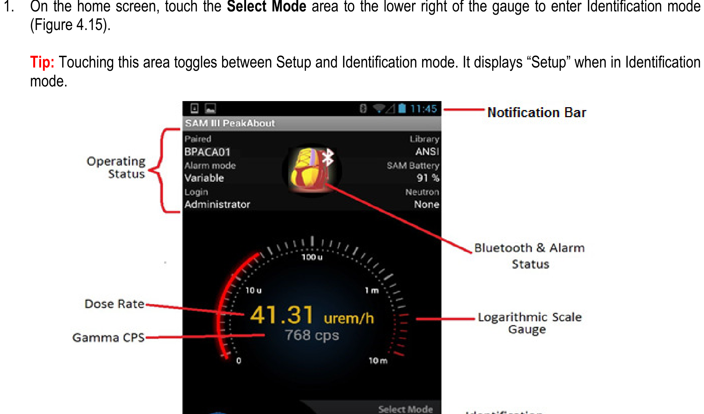
| Element | Description |
|---|---|
| Smartphone notification bar | Displays smartphone status information. See smartphone manual for details. |
| SAMpack 120 status display | Paired: Bluetooth name of connected SAMpack 120 unit (starts with BP). Alarm mode: Operator-selected alarm threshold (Fixed or Variable). Login: Operator status (User or Administrator). Library: Operator-selected isotope library (ANSI or customized). SAM Battery: Battery life (%) of connected SAMpack 120 unit. Neutron: Neutron count rate (“None” if option is not installed). |
| Select Mode area | Toggles between Identification mode and Setup mode |
| Bluetooth and alarm status | SAMpack icon blinks during monitoring and turns red when the system alarms. Bluetooth symbol displays when paired to one or more detector units. |
| Gamma activity | Gauge displays gamma activity in dose rate units and counts per second |
- The gauge displays both the dose rate (rem/h or Sv/h) and count rate (counts per second (CPS)) of gamma activity. The scale is logarithmic. PeakAbout automatically scales to urem/h or mrem/h (nSv/h or mSv/h) according to the detected activity level. The default dose rate unit is rem/h and can be changed to Sv/h. To change this setting, select Device Information / Dose Rate Unit from the Setup menu (Figure 4.9). Several methods have been proposed for calculating dose rate from spectral data acquired with a NaI(Tl) detector. The SAMpack 120 employs a method defined by Kwon et. al.
- Rotate the smartphone 90° to use the spectrum analysis tools (Figure 4.5).
4.3.8 Identify Isotopes When the SAMpack 120 Has Alarmed
When the unit detects gamma activity above the alarm threshold, the readout on the gauge changes from white to red (Figure 4.16, contrast with Figure 4.25, right), the SAMpack icon turns red, and the audible alarm sounds. PeakAbout automatically identifies the detected nuclide(s) and saves relevant data in an Event Log file.
Rotating the smartphone 90° will activate the Isotope Identification screen where identified isotopes are displayed along with their confidence levels (Figure 4.16). Up to 10 isotopes can be identified simultaneously and presented on the Isotope Identification and spectrum analysis screens.
To be identifiable, the isotopes must be in the selected Isotope Library. If a custom Isotope Library is selected, you can look up its name by opening the Setup menu and scrolling down to the Library List option (Figure 4.9). Refer to Figure 4.5 in section 4.2.4 above for instructions for using the spectrum analysis tools.
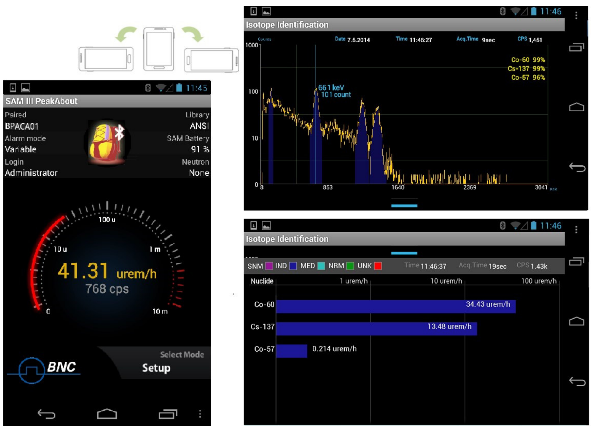
4.3.9 Identify Isotopes Manually
You may also choose to perform identification manually. Manual Identification cannot be started when the SAMpack 120 is already in an alarm condition.
- With PeakAbout in Identification mode, rotate the smartphone 90° to display the Isotope Identification screen.
- Touch the menu button to display the Manual Identification bar at the bottom of the screen (Figure 4.17).
- Touch the Manual Identification bar to start an event spectrum. Touching + or – extends or reduces the capture time in increments of 30 seconds. The default Manual Identification capture time is 60 seconds. When the capture time has elapsed, the default Isotope Identification screen returns. Touch Cancel to return to the default at any time.
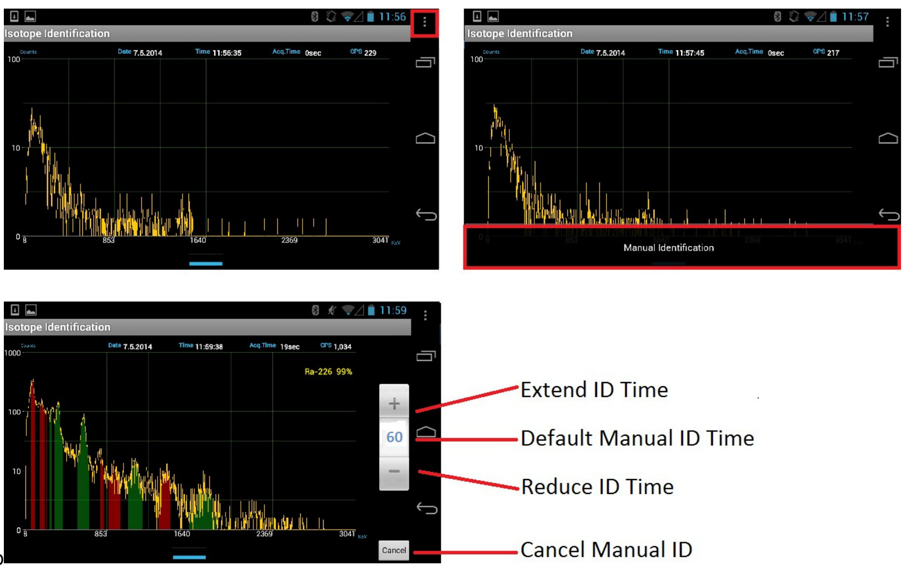
4.4 Operating Instructions: Additional Features
4.4.1 Health Safety Alarm
For the user’s safety, PeakAbout features a separate Health Safety Alarm (Figure 4.18) with a distinctively different ringtone and visual signal. When the safety threshold is exceeded, the Health Safety ringtone sounds, the SAMpack icon changes to a red and white radiation hazard symbol, and the background of the gauge turns red. The Health Safety Alarm takes precedence over all other alarms.
To change the threshold, select Health Safety Threshold from the Setup menu (Administrator login is required). The threshold is defined in units of dose rate (rem/h or Sv/h).
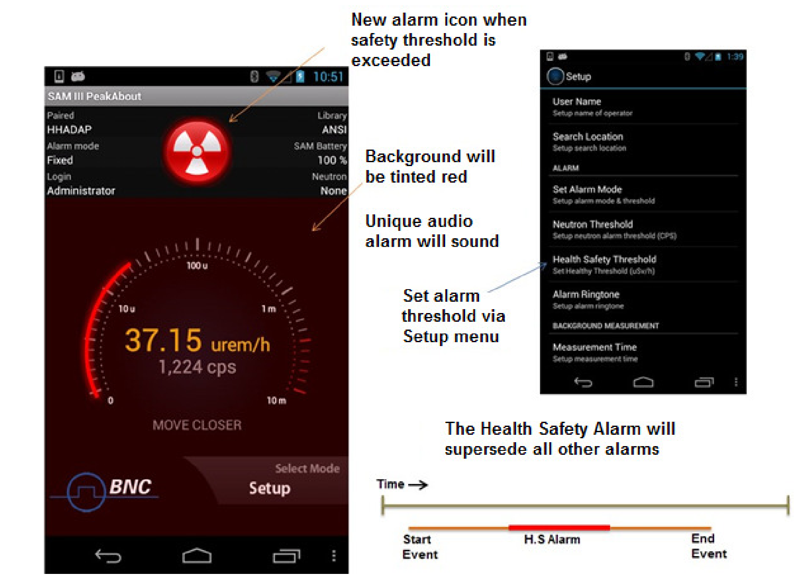
4.4.2 View the Event Log List
When the SAMpack 120 alarms or you manually identify an isotope, PeakAbout automatically generates an Event Log and saves it on the smartphone. A summary of each alarm event or Manual Identification event appears in the Event Log list (Figure 4.20).
- With PeakAbout in Setup mode, touch the menu button (Figure 4.19).
- Select Setup & Event.
- Select Event Log.
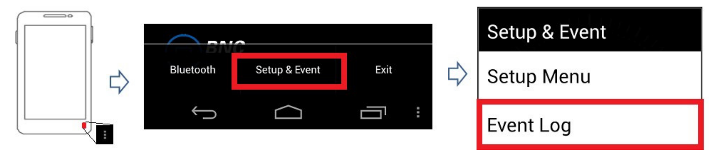
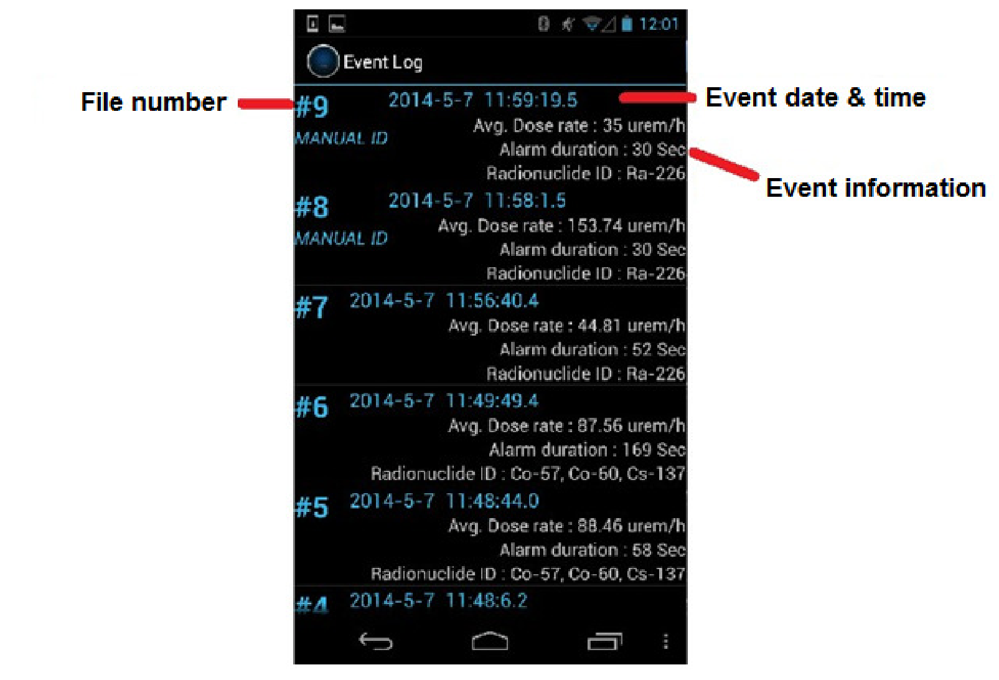
Event data can be downloaded by connecting the smartphone to a PC that has PeakID installed on it (see Chapter 5). Once the event data has been downloaded to the PeakID database, it is automatically deleted from the smartphone.
4.4.3 Analyze an Event
Complete analysis of the spectra for the saved events can be performed with either a smartphone (see below) or a PC (see Chapter 5).
- Select an event from the Event Log list.
- Rotate the smartphone 90° counter-clockwise (Figure 4.21) to display the Event Analysis screen. Event information is displayed on the right-hand side of the screen. The spectrum manipulation techniques described in Figure 4.5 can also be used on the Event Analysis screen.
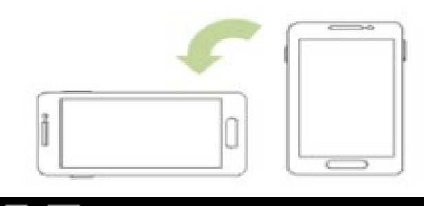
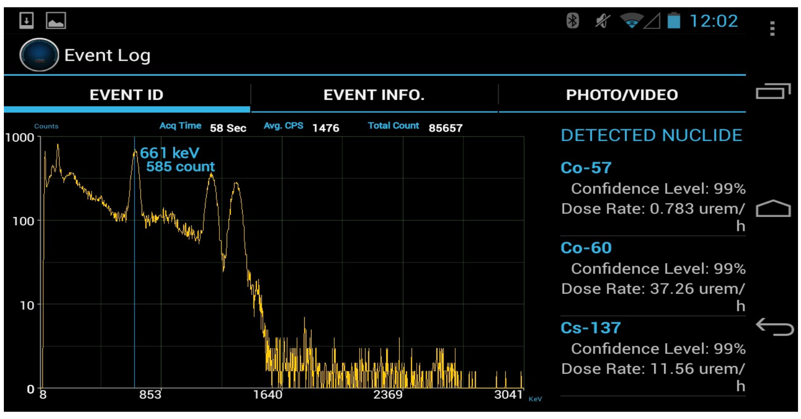
4.4.4 Attach Comments and Photos/Videos to an Event
You may attach comments and multiple photos and/or videos to a saved event.
- Select an event from the Event Log list and rotate the smartphone 90° counter-clockwise. The Event Analysis screen will open.
- To attach a comment, touch the Event Info tab to open the Event Info screen (Figure 4.22, left).
- Touch the blinking cursor in the Comment field at the bottom of the screen (Figure 4.22, right).
- Type your comment and touch Done (Figure 4.23, left). To add more text, repeat 2.a and 2.b.
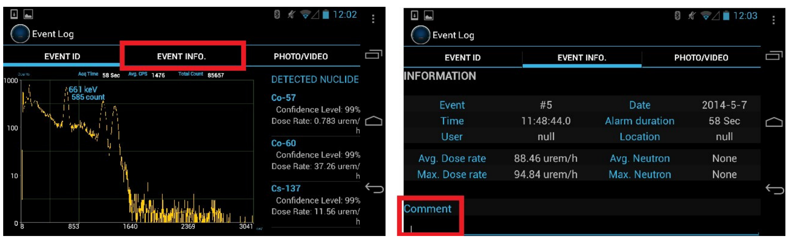
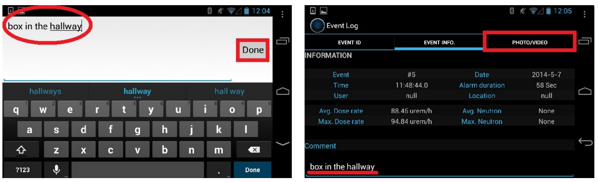
- To attach a photo, touch the Photo/Video tab (Figure 4.23, right) to open the Photo/Video screen (Figure 4.24).
- Touch the menu button and select either Photo or Video (Figure 4.24, left).
- Touch the screen to capture the photo or video.
- When the photo or video is captured, touch the checkmark to save it or touch the X to reject it. You will automatically be returned to the Photo/Video page. The image is now displayed as part of the event (Figure 4.24, right). Repeat steps 3.a through 3.c to add more images.
- Touch the return key on the lower right side of the screen (Figure 4.24, right) to return to the Event Log.
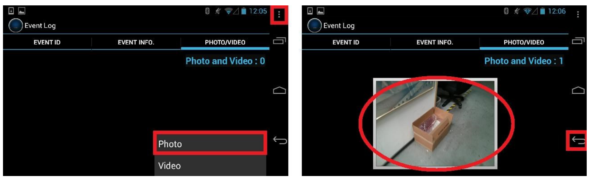
4.4.5 Auto Calibration and Auto Stabilization
The Auto Calibration and Auto Stabilization features adjust the calibration parameters of the SAMpack 120 to correct for any drift caused by environmental changes (generally ambient temperature). If drift of more than ±6% between the stabilized peak and the original peak (Cs-137 calibration peak) occurs, then you must perform manual calibration using a Cs-137 source.
Auto Calibration automatically executes when the detector unit is paired with PeakAbout via Bluetooth. While we recommend waiting for Auto Calibration to complete (100%) before proceeding, Auto Calibration can be stopped by touching Cancel if necessary (Figure 4.25).
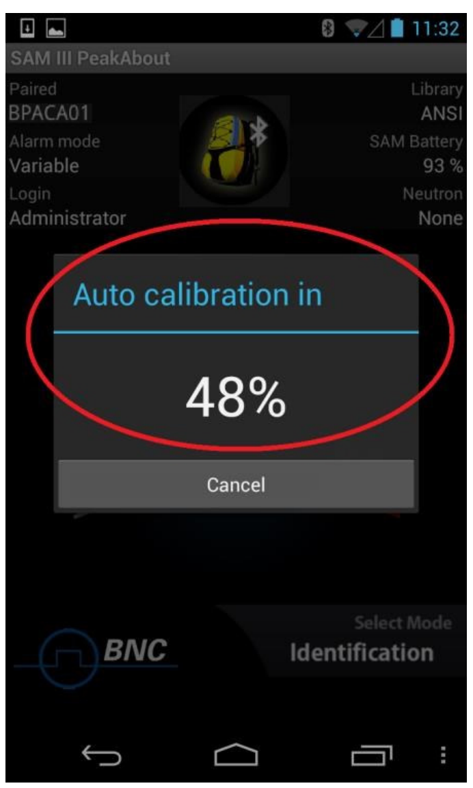
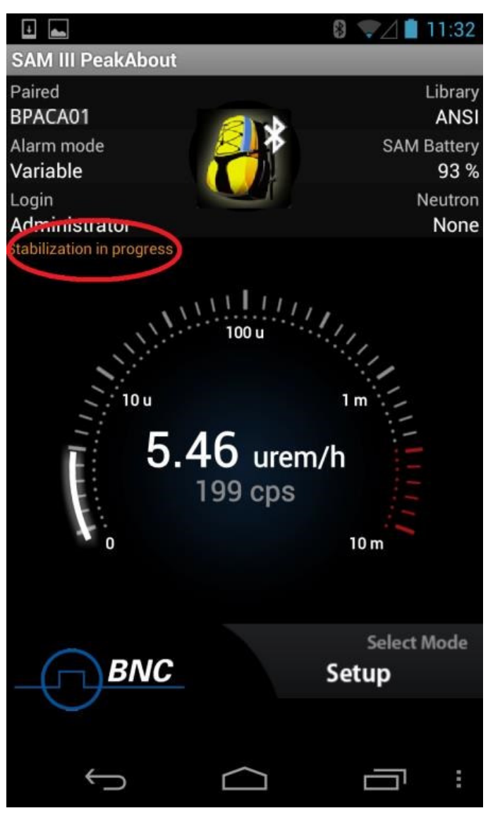
Figure 4.25. Auto Calibration (left) and Auto Stabilization (right) example
Auto Stabilization begins immediately after the completion or cancellation of Auto Calibration and executes again every five minutes, unless the system is in an alarm condition.
When Auto Calibration or Auto Stabilization is executed, the system automatically adjusts its gain using the 1.4 MeV energy peak emanated by the K-40 radionuclide that naturally occurs in potassium. Potassium chloride (KCl) powder is securely installed within the detector unit, and no other calibration source is needed. If necessary, such as in the rare case of a location where levels of potassium are unnaturally low, supplemental KCl can be used to achieve stabilization more quickly.
4.4.6 Sequential Mode
The purpose of Sequential mode is to generate a series of events separated by short pauses, one right after the other. The entire sequence is generated automatically, without the operator needing to click Manual Identification each time. Each event in the sequence has the same measurement time (capture time), and each pause before the next event is the same. The sequence continues for a specified number of events or until the user interrupts and cancels the sequence. Sequential mode is useful for plotting a series of events while the SAMpack 120 moves along a continuous path.
For each event in the sequence, the SAMpack 120 collects the date, time, GPS position, overall count rate, overall dose rate, count rate and dose rate for each identified isotope, and other typical event data (including the identified neutron rate if the neutron option is installed). After the survey, all of the spectral data from the entire sequence may be batch processed (to a spreadsheet, for example) with a single command.
Administrator login is required to enable or disable Sequential mode, or to change the settings.
- On the Setup menu, select Setup Sequential Mode.
- To enable Sequential mode, place a check in the box (Figure 4.26).
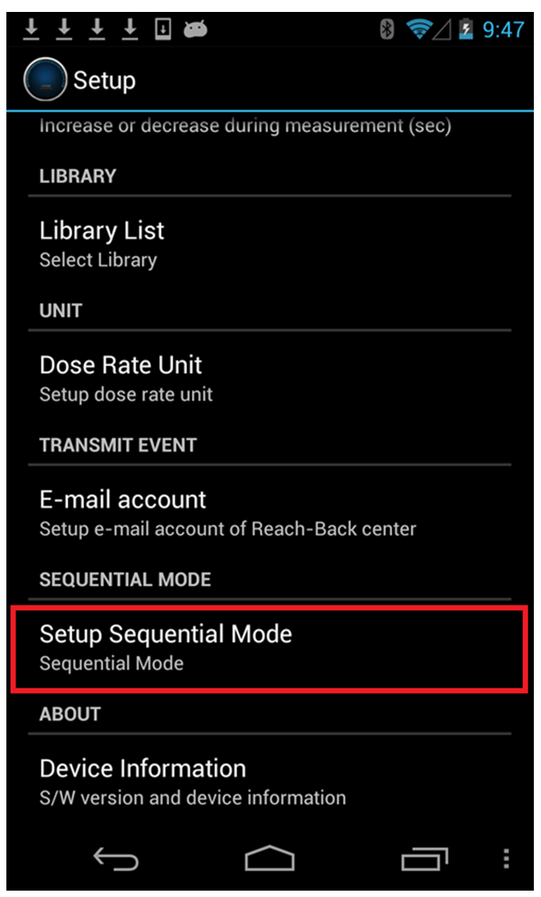
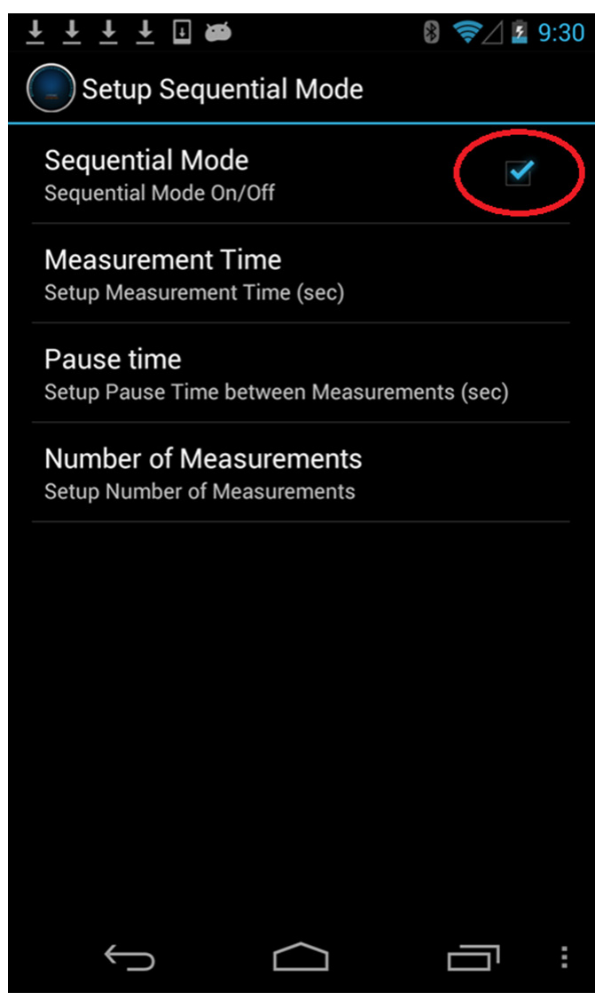
Figure 4.26. Sequential mode setup
| Sequential mode default settings | Value |
|---|---|
| Measurement Time | 60 seconds |
| Pause Time | 5 seconds |
| Number of Measurements | 5 |
- To change a setting, select the desired option, use the keypad to enter a new setting, and touch OK.
- After Sequential mode has been enabled, starting a sequence of event captures is similar to starting Manual Identification. With PeakAbout in Identification mode, rotate the screen 90° to display the Isotope Identification screen. Touch the menu button (Figure 4.27). The bottom bar displays Manual Identification and Sequential mode. If Sequential mode does not appear on the bar, it is currently disabled. To enable, make sure there is a check in the box as shown in Figure 4.26.
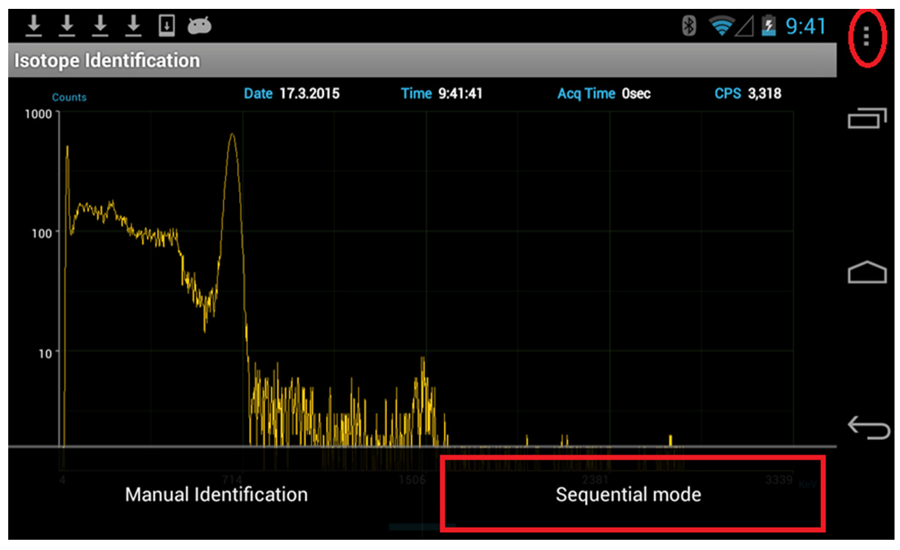
- Touch Sequential mode and an event spectrum will begin immediately. Sequential mode will not start if an alarm is in progress. PeakAbout displays the sequence count and the measurement time (Figure 4.28). Increasing or decreasing the measurement time is not allowed while a sequence is in progress.
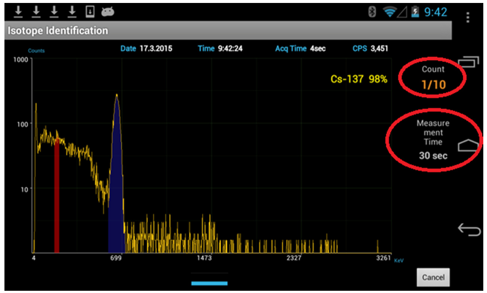
- When the event capture time has elapsed, the Isotope Identification screen returns to the real-time spectrum display (Figure 4.29). The event is automatically numbered and saved. PeakAbout displays the next event number along with the total number of event captures in the sequence (count 3/10 in Figure 4.29).
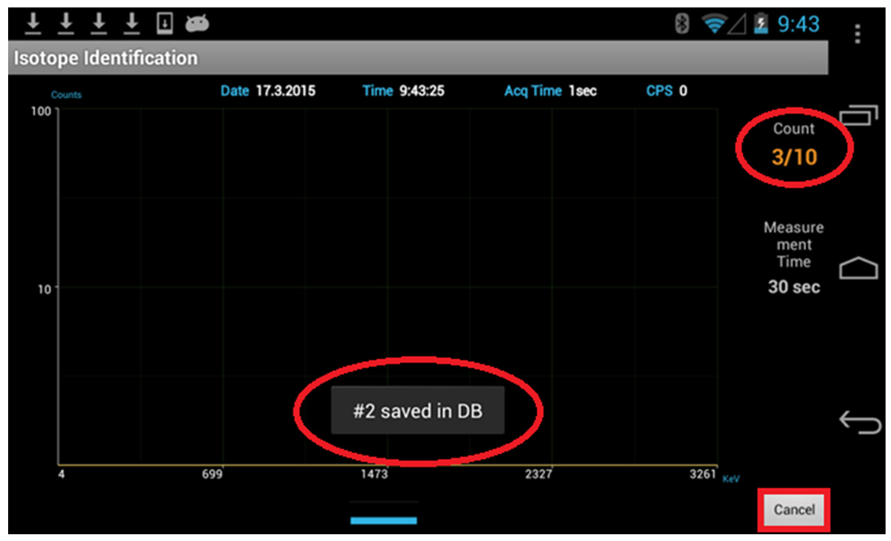
- During the pause, the SAMpack 120 may be moved to a different location. When the pause time has elapsed, another event spectrum will automatically begin.
- When the specified number of event captures is completed, the Isotope Identification screen will display the message “Sequential Mode Completed” and return to the real-time spectrum display.
- You may abort the sequence at any time by pressing the Cancel button in the lower right corner. PeakAbout will return to the real-time spectrum display. All completed events are saved.
- You may view saved sequences in the same way you view events (touch the menu button, select Setup & Event, then select Event Log). Events captured in Sequential mode are labeled with the additional designation “SM#” (Figure 4.30).
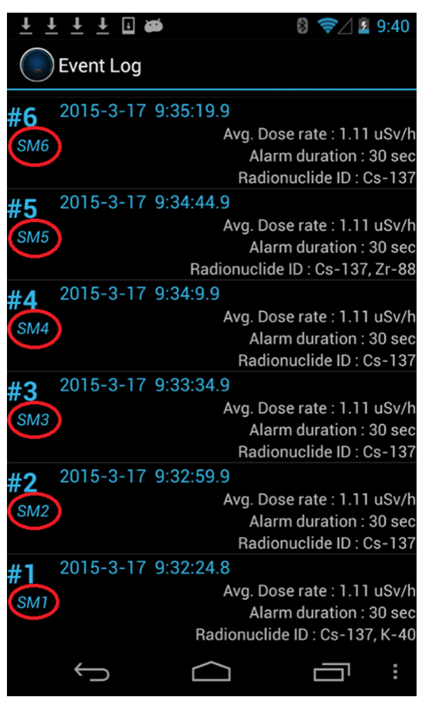
4.4.7 Gauge Mode and Finder Mode
By touching the center of the screen and swiping left or right, you can change the Identification screen from Gauge mode to Finder mode (Figure 4.31).
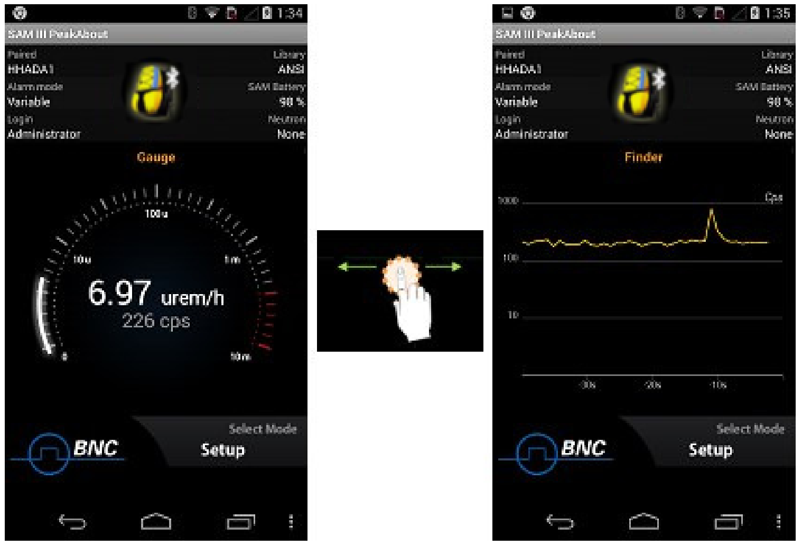
Finder mode emphasizes count rate rather than dose rate information. Counts per second (CPS) are displayed on a graph that moves to the left as it updates every second. The full graph represents the most recent 40 seconds of CPS. You might prefer to use Finder mode because the graph can alert you to a momentary increase in activity more effectively than the rapidly changing numerals on the Gauge mode screen. With Finder mode you also have a second chance to observe evidence of a source that you might not notice otherwise. The system will alarm (including the Health Safety Alarm) regardless of which mode it is in when the alarm threshold is exceeded.
4.4.8 Move Closer/Move Back
To enhance the reliability of PeakAbout’s statistics, the system may prompt you to maintain a count rate close to the optimal range of 2000 to 3000 counts per second (CPS). When the count rate is just above normal background, the message “MOVE CLOSER” will appear above the Select Mode area (Figure 4.32). If the count rate is too high (more than 40,000 CPS), PeakAbout will likewise display the message “MOVE BACK.” The Move Closer/Move Back feature applies only in Gauge mode.
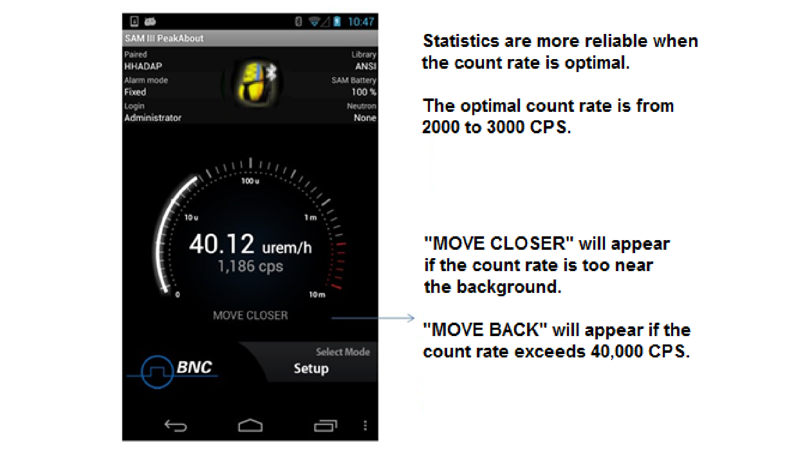
4.4.9 Wireless Data Transmission (Reach-Back)
When operating within range of cellular service or Wi-Fi, PeakAbout allows you to transmit spectrum and event data directly from the smartphone to a prearranged location such as a U.S. DOE reach-back facility, group leader, command center, etc. Data from an alarm event that you select is emailed in N42 format to the specified recipient.
To use this feature, you must already have established an email account on the smartphone (the system is optimized for Gmail by Google). Refer to the smartphone manual for instructions on setting up an email account. The PeakAbout Reach-Back setup screen will ask you to enter SMTP server and port settings for the smartphone’s email account. Make note of these settings before opening the Reach-Back Email Account menu item. SMTP server and port settings can usually be found on the smartphone at Settings | Accounts | Email | Account settings | Email account | Outgoing settings.
- Enter your email address and the recipient’s email address.
- Open the Setup menu (Figure 4.33, top).
- Scroll to TRANSMIT EVENT and select E-mail account (Figure 4.33, lower left).
- Enter the recipient’s address under Reach-Back account (Figure 4.33, lower right).
- Enter the sender’s address under Sender (Figure 4.33, lower right).
- Enter the SMTP server and port settings for the smartphone’s email account. This information can usually be found on the smartphone at Settings | Accounts | Email | Account settings | Email account | Outgoing settings.
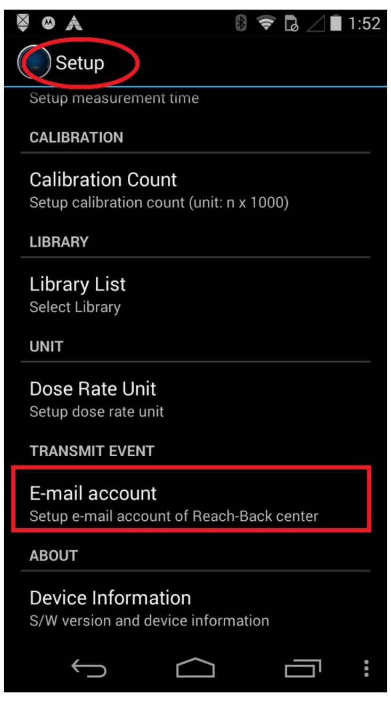
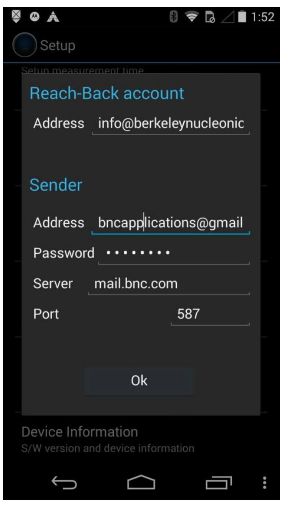
Figure 4.33. Email setup example for wireless data transmission
- Select and transmit an event.
- Open the Event Log list (Figure 4.34, top).
- To select an Event Log from the list, touch and hold it for two seconds (Figure 4.34, lower left and center).
- At the “Transmit N42 file” prompt, touch Transmit (Figure 4.34, lower right).
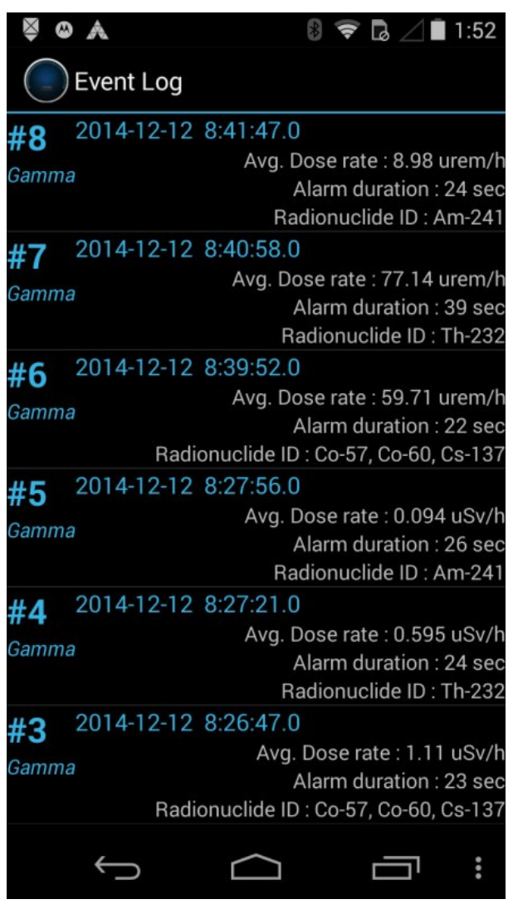
Figure 4.34. Wireless data transmission example
- View the results (Figure 4.35).
Figure 4.35. Transmission results messages
| Result | Message on Screen | Action Needed |
|---|---|---|
| Transmission was completed | Transmit success | Touch OK to clear the message |
| Transmission failed due to incorrect email setup | Incorrect email account information. Please complete email account of Reach-Back center in Setup menu. | See step 1 above |
| Transmission failed due to lack of network connection | Internet not available | Wait until coverage is available |
4.4.10 Neutron Option
If your SAMpack 120 unit includes the neutron detector option, solid-state sensor arrays on 6Li substrate (Domino) are integrated with moderator packaging inside the detector unit. PeakAbout will display neutron activity on the Identification screen in counts per second (CPS) (Figure 4.36, left).
To set the neutron alarm threshold, open the Setup menu and select Neutron Threshold (Figure 4.36, right). Administrator login is required.
Figure 4.36. Features available with neutron detector option. Left: Neutron activity on home screen. Right: Neutron alarm threshold setting on Setup menu
4.5 Upgrading PeakAbout
When the smartphone is online via a cellular or Wi-Fi network, PeakAbout automatically checks for software upgrades. If an upgrade is available, this message will crawl across the bottom of the home screen: “Latest version of SAM III software is available. Please download it from Setup / Device Information /.” If you are upgrading from a version earlier than 3.6.0, go to step 5 below.
- Open the Setup menu, scroll down to the bottom and select Device Information, then select Download Latest SAM III SW (Figure 4.37). A pop-up window will appear.
- In the pop-up window (Figure 4.38), enter the BSN number from the label on the detector unit (Figure 2.1), then touch the PeakAbout button.
- Open the status menu of the smartphone by touching and dragging the top menu bar (Figure 4.39).
- When download has completed, touch SAM III PeakAbout (V.x.x.x).apk. The upgrade will install automatically.
- If you are upgrading from a version earlier than 3.6.0:
- Open a web browser from the smartphone.
- Go to www.bncsam.com.
- Go to step 2 above and follow the instructions through step 4.
5PeakID Application
5.1 Connecting the Smartphone to a PC
PeakID supports management of Event Log files, data analysis including integration of data from multiple units, and data backup. It is compatible with PCs that run Windows 7 or higher.
The smartphone must be connected to a PC in order to install PeakID on the PC or to download Event Log data. A USB to micro USB cable is provided for this purpose.
It is important to exit PeakAbout before connecting to a PC. Once the smartphone is connected to the PC via the cable, pull down the notification screen and confirm that the smartphone is connected as a media device (Figure 5.1).
5.2 Installing PeakID
Installing PeakID is a simple process that makes use of an automated installer. Connect the smartphone to a PC and follow the prompts in the InstallShield Wizard (Figure 5.2).
5.3 Navigating the GUI
The home screen (Figure 5.3) displays event data that has been downloaded to PeakID from the smartphone, or from a database previously saved on the PC.
| # | Element | Description |
|---|---|---|
| 1 | Database directory | Allows user to load event data to PeakID by clicking either Load from PDA or Load from DB (a database previously saved on PC) |
| 2 | General information | Displays date, user, location, and event summary |
| 3 | Event List | Lists Event Log files including event number and type: Manual, Gamma, Neutron, or Sequential |
| 4 | Event spectrum | Displays spectrum, total counts, and counts per second for the selected event |
| 5 | Real-time activity | Displays activity as a function of time |
| 6 | Identification | Displays isotopes identified in the selected event |
| 7 | Comments | Displays comments if any were attached |
| 8 | Photos | Displays photos if any were attached |
| 9 | Isotope Library button | Allows user to select active library from available isotope libraries |
| 10 | XML save button | Allows user to save spectrum and report data in XML format |
5.3.1 Spectrum Display Options
The spectrum can be displayed as either a linear or a logarithmic scale (Figure 5.4). To switch between the two scales, right-click while the cursor is in the spectral area.
5.4 Loading and Analyzing Event Data
5.4.1 Download an Event Log from the Smartphone to the PC
Ensure that the smartphone and PC are properly connected and prepared (see section 5.1).
- Open PeakID.
- Click Load from PDA (Figure 5.5, top left). PeakID automatically downloads the Event Log to the PC database and deletes it from the smartphone. Downloaded events are displayed in the Event List window (Figure 5.5, upper left).
- Select an event from the list to analyze. The spectrum is displayed in the Event Spectrum window (Figure 5.5, center). Time and duration of the selected event are displayed in the Real-Time Activity window (Figure 5.5, top right). Isotope information for the selected event is displayed in the Detected Nuclide window (Figure 5.5, upper right).
5.4.2 Load an Event Log from the PC Database
All the events collected from multiple SAMpack 120 units may be stored in a single database and managed using PeakID. It is not necessary to connect the smartphone to the PC in order to manage or analyze events loaded from the PC database.
- Click Load from DB (Figure 5.6). The database browsing window pops up.
- When prompted, click on From Backup.
- Click on the folder labeled SAM.
- Click on the desired folder. Folders are labeled with the date of collection of the event data. To delete a folder or subfolder, select it and right-click, then click Delete.
- If event data was collected using multiple SAMpack 120 units, there will be multiple subfolders labeled with the name and serial number of each unit. Select the desired subfolder.
- The Event Log is highlighted in the Event List window. The selected event is displayed in the Event Spectrum window. Isotope information and all relevant event data are displayed as in Figure 5.5.
5.5 Managing the Isotope Library
The Administrator password is required to open the Isotope Library management tool and upload an Isotope Library to a smartphone.
- Click the Isotope Library button (Figure 5.7).
- Enter the Administrator password. The Isotope Library List will appear.
- Select a library name from the list.
- Click the Upload to PDA button below the list.
5.6 Saving Event Data in XML Format (ANSI 42.42)
The spectrum and relevant data from the Event Log can be saved in the XML file format specified in the ANSI 42.42 standard.
- Select the event from the Event List.
- Click the disk icon in the lower left corner of the screen (Figure 5.8). The destination directory screen will appear.
- Browse to the desired directory and click Save.
5.7 Upgrading PeakID
To upgrade to the latest PeakID software (version 3.5.0 as of March 2016), open a web browser on your PC and go to www.bncsam.com. Following the instructions on the screen, enter the BSN number from the label on the detector unit (Figure 2.1), then click the PeakID button.
Download the file SAM III PeakID (v3.x.x).exe to your PC. Go to the folder you downloaded it to, and open SAM III PeakID (v3.x.x).exe. The upgrade will install automatically.
6Useful Tips and Reminders
- Exit PeakAbout first. Before connecting the smartphone to a PC (via USB cable), it is important to exit PeakAbout.
- Avoid polarized lenses. Wearing polarized lenses such as sunglasses can make the rotated smartphone screen appear blank. We recommend that you do not wear polarized lenses while using PeakAbout.
- Close unused apps. To optimize the performance of the SAMpack 120, turn off unnecessary smartphone applications.
- Know your smartphone. Refer to the smartphone manual to become familiar with how to operate the smartphone.
- Do not open the unit. Do not open the cover of the detector unit. Opening the unit may void your warranty. Any repairs or alterations should only be performed by technicians who are authorized by Berkeley Nucleonics Corporation.